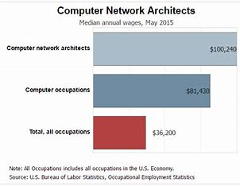

Computer Network Architect

Minimum degree required: Bachelor's
Years of experience required: 1-2
Good fit for:-
- Detail-oriented professionals with a broad knowledge of network and IT technologies
- Leaders with communication and interpersonal skills
STATISTICAL OUTLOOK for computer network archietect:-
